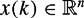
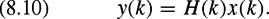
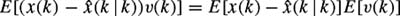

|
| |||||||||||||
|
|
||
One reason that Kalman filtering has become such a popular estimation method is that it is extremely easy to implement for linear systems. The equations in section 8.2.5 can be implemented directly with little understanding of the underlying theory. This feature makes Kalman filtering useful and accessible to a broad range of potential users, but it does not mean that the underlying theory is unimportant. In fact, most modern applications of Kalman filtering employ substantial modifications of the original equations. For example, modifications are necessary to address nonlinear sensor models or non-Gaussian noise models in robot localization and mapping problems. Other modifications are often used to reduce computational complexity.
This section is intended to provide the reader with an understanding of the fundamentals of Kalman filtering for linear systems. The approach taken here is intuitive and uses basic facts from geometry and linear algebra to reconstruct Kalman's equations. Some knowledge of multivariate Gaussian distributions is assumed (see the statistics primer in appendix I for an overview). We begin with a simplified version of the Kalman filtering problem to illustrate the basic concept, then we incrementally add complexity until we arrive at the full Kalman equations. An example illustrating the application of the Kalman filter equations is presented, and the property of observability in linear systems is introduced. With the understanding provided here, the reader should be able to modify the Kalman filter to fit the needs of a specific estimation problem.
In order to apply Kalman filtering to the problem of robot localization, it is necessary to define equations that can be used to model the dynamics and sensors of the robot system. The vector x is used to denote the system (robot) state as it evolves through time. This chapter uses discrete time models, meaning that the continuously varying robot state is sampled at discrete, regularly spaced intervals of time to create the sequence x(k), k ?{0, 1, 2, ...}. Specifically, if x(0) is the value of the state at time t = t0, then x(k) is the value of the state at time t0 + Tk, where T is defined to be the sampling time step.
For now we assume that the evolution of the robot state and the values measured by the robot sensors can be modeled as a linear dynamical discrete-time system:
The vector  denotes the full system state. The vector is used to represent the system input such as velocity commands, torques, or forces intentionally applied to the robot. The vector is the system output and contains the values reported by the system sensors. The matrix encodes the dynamics of the system, and describes how the inputs drive the dynamics. The vector is called the process noise and is assumed to be white Gaussian noise with zero mean and covariance matrix V (k).[1] The process noise is used to account for unmodeled disturbances (such as slipping wheels) that affect the system dynamics. The matrix describes how state vectors are mapped into outputs. The measurement noise vector is assumed to be white Gaussian noise with zero mean and covariance matrix W (k). Here we assume that H(k) is full row rank for all k, although it may not be square.
The objective of Kalman filtering is to determine the "best" estimate of the state x at the kth time step given a previous estimate together with the known input u(k) and output y(k). In order to achieve this there are two separate difficulties that must be overcome. The first is the presence of the unknown and unmeasurable noise vectors v(k) and w(k). Hence, as its name implies, one task of the Kalman filter is to filter out these unwanted disturbances. The second difficulty is that the state in general cannot be directly observed from the outputs because H(k) may not be invertible. This means that the state estimate must be reconstructed using the time history of the known signals y(k) and u(k) together with known parameters F(k), G(k), H(k), V (k), and W (k).[2] A device that does this is called an observer. The Kalman filter is both an observer and a filter.
In this section we build up to Kalman's equations by first building an observer for a system with no measurement noise. Specifically, we derive the equations for a simple two-step observer using only a few simple facts from linear algebra. We then introduce the concept of using a multivariate Gaussian distribution as a state estimate, and we rederive the simple observer equations that use this kind of estimate. This leads naturally to the derivation of the Kalman filter equations for linear discrete time systems.
Here we consider a linear discrete time system with no noise:
| (8.4) |
Here, H(k) is assumed to be full row rank at every k. The objective is to build an observer for this system, i.e., we would like to find a set of equations that allows us to reconstruct the state x. The observer we build will be recursive[3]: it will take the most recent estimate together with the most recent input u and output y, and then return the next estimate. If the observer works (and the assumptions are valid), then the estimate will converge to the actual value of x over time.
Before we begin deriving the necessary equations, we first introduce some notation to make the job of keeping track of the estimate easier. Given two integers k1 and k2 with k1 ≥ k2, we use  to denote the value of the state estimate at time k1 given the value of the output at all times up to k2. The symbol
to denote the value of the state estimate at time k1 given the value of the output at all times up to k2. The symbol  is pronounced "x hat at k-one given k-two." This notation may seem cumbersome at first, but its usefulness will soon become apparent.
is pronounced "x hat at k-one given k-two." This notation may seem cumbersome at first, but its usefulness will soon become apparent.
Now the observer follows an intuitive two-step process. Given the current state estimate , we first generate a prediction by propagating the prior estimate according to the system dynamics in equation (8.3). We then correct the prediction based on the output y(k + 1) to generate the next estimate . We call these two steps the prediction and update steps, respectively.
For the prediction step, we simply substitute  into equation (8.3) to get
into equation (8.3) to get
| (8.5) |
To perform the update, we first note that given the output y(k + 1), the system state is constrained to lie on the hyperplane
Note that Ω is the set of states that are consistent with the measurement y(k + 1). For our simple observer, we choose the next estimate to be the point in Ω that has the shortest distance to the prediction . This is an intuitive choice: we have some reason to believe that is close to the actual state value, and we know that the actual state must be in Ω. So it makes sense to choose the update to be the point in Ω that is closest to . This choice of update is depicted graphically in figure 8.2. We can use algebra to find an expression for . Define the vector Δx to be the vector that points from to , i.e.,
By our choice of , Δx is the shortest vector pointing from to Ω. This means that Δx must be orthogonal to Ω by the standard inner product on , i.e., we must have aT Δx = 0 for any a that is parallel to Ω.[4] Now we need two basic facts from linear algebra [398]:
A vector is parallel to Ω if and only if H(k + 1)a = 0. The set of all such a is called the null space of H(k + 1) and is denoted by null(H(k + 1)).
A vector is orthogonal to every vector in the space null(H(k + 1)) if and only if b is in the column space of H(k + 1)T, where the column space of H(k + 1) is denoted column(H(k + 1)T) and is defined to be the span of the columns of H(k + 1)T.
Note that any vector b ∊ column(H(k + 1)T) can be written as a weighted sum of the columns of H(k + 1)T, which is equivalent to saying that b = H(k + 1)T γ for some . Combining these two facts, we see that in order to have Δx orthogonal to Ω, we must have
for some vector γ in . Next, we will try to find γ.
Define the innovation error ν to be the difference between the actual output y(k +1) and the predicted output . In other words, ν is the difference between what the sensors reported and what they would have reported if the prediction was correct. The larger the discrepancy between the actual and predicted measurements, the larger the necessary correction Δx will be. So for now we make the guess that γ can be written as a linear function of ν, i.e., γ = K ν for some . This yields the equation
If we can find a K such that agrees with the measurement y(k + 1) (i.e., , then our guess is correct and we have an expression for . To find K, we start with the requirement that
which implies that
Substituting Δx = H(k + 1)T K ν yields
which implies that K = (H(k + 1)H(k + 1)T)−1. Note that the matrix H(k + 1) H(k + 1)T is guaranteed to be invertible by the assumption that H(k + 1) is full row rank for all k. We were able to find a K that solves equation (8.7) meaning that for the choice Δx = K ν, equation (8.6) is satisfied. Our guess that Δx is a linear function of ν is then verified. As a result, we now have equations that fully express our simple two-step observer:
prediction:
update:
Note that in the update equation we have denoted H(k + 1) simply by H to keep the expression manageable.
It turns out that there are some problems with this observer. Our choice of the update is naive. Since the update is always perpendicular to the set Ω, only the component of the state that directly affects the current sensor reading is updated. Estimate errors in the direction parallel to Ω are never corrected. As a result, the estimate  will not in general converge to x. However, what is important is that the intuitive notions of prediction and correction are the same as those used in the Kalman filter. In the following discussion we follow this intuition toward Kalman's equations, and in the process we fix the problems associated with our simple observer.
will not in general converge to x. However, what is important is that the intuitive notions of prediction and correction are the same as those used in the Kalman filter. In the following discussion we follow this intuition toward Kalman's equations, and in the process we fix the problems associated with our simple observer.
The estimate produced by the simple observer discussed in the previous section is a vector. In contrast, the estimate produced by a Kalman filter is a multivariate Gaussian probability distribution over the state space. In addition to providing a vector estimate , a Kalman filter also provides an estimate of the error covariance P(k | k) associated with  . In this section, we advance the simple observer from the previous section one step toward Kalman's filter by augmenting it to provide a covariance estimate.
. In this section, we advance the simple observer from the previous section one step toward Kalman's filter by augmenting it to provide a covariance estimate.
First we review some basic facts about multivariate Gaussian distributions. A more detailed discussion can be found in the statistics primer in appendix I. For , a multivariate Gaussian distribution has a PDF of the form
| (8.8) |
where x is a vector in and P is a symmetric, positive definite n × n matrix. It is clear that p(x) is entirely defined by x and P. Further, E[x] = x and E[(x − x)(x − x)T] = P, so x and P are called the mean vector and covariance matrix, respectively. In the Kalman filter, we maintain a state estimate which will be the mean of a Gaussian distribution, so in the sequel we replace x with .
In this section, we consider linear discrete time systems with process noise but no measurement noise, i.e.,
| (8.10) |  |
As before, is assumed to be white noise chosen from a zero-mean Gaussian distribution with covariance matrix V(k) and the matrix H(k) is assumed to be full row rank for all k.
Here we follow the same basic steps of prediction and update that were used for the simple observer. The main difference is that this time we must generate both a state vector estimate and a covariance matrix estimate P(k | k). Hence the prediction step will generate and P(k + 1 | k), and the update step will generate the next estimate given by and P(k + 1 | k + 1).
The state vector prediction is found by substituting into equation (8.9). Since the expected value of v(k) is zero, the resulting prediction is
To compute the predicted covariance matrix we start with the definition of the covariance matrix:
Substituting x(k + 1) from equation (8.9) and from equation (8.11), then multiplying the terms inside the expectation, yields
The fact that v(k) is independent of both x(k) and implies that , which is zero due to the fact that v(k) is assumed to be zero mean. Using this fact together with the linearity property of the expectation yields
The first expectation term in this equation matches the definition of the covariance matrix P(k | k), while the second expectation term matches the definition of the covariance matrix V(k). As a result we can write the prediction equation
| (8.12) |  |
To perform the update step, we choose to be the most likely point x in the set
Hence, we look for x ∊ Ω that maximizes the Gaussian distribution defined by and P(k + 1 | k), i.e.,
Because the exponential is monotonically increasing, p(x) is maximized when is minimized. With this in mind, we introduce a new notion of distance with the norm[5]
which is derived from the new inner product on ,
Define . So we want to find such that
||Δx||M is minimized.
.
The first condition means that the vector Δx is orthogonal to the hyperplane Ω with respect to the inner product 〈·, ·〉M. This notion is depicted graphically in figure 8.3. The ellipses in this figure represent sets of points that are equidistant to according to the ||·||M norm. With this notion of distance, choosing to be the closest point on Ω to is equivalent to choosing the point at which one of the equidistant ellipses tangentially intersects Ω. The resulting Δx must be orthogonal to Ω, but our notion of orthogonality is skewed by P(k + 1 | k)−1. This means that we must have
for all a ∊ null(H(k + 1)). In the remainder of this section, we simply denote H(k + 1) by H for brevity. Using the linear algebra facts presented earlier, this expression can only be true if Δx ∊ column(P(k + 1 | k)HT), which means that
for some . As in the case of the simple observer, we guess that γ can be expressed as a linear function of the innovation error ν = y(k + 1) − Hx(k + 1 | k), i.e.,
for some . Now we enforce , i.e.,
which implies that H Δx = ν. Substituting for Δx from equation (8.13) yields
The resulting update equation for the state vector estimate is
| (8.14) |
To ease notation, we define
so that the update equation can be written simply
To find the update equation for the covariance matrix estimate, we use the definition of the covariance matrix together with the update equation for the state vector estimate to get
The details of this derivation are the subject of problem 7.
Summarizing the observer derived in this section:
prediction:
| (8.16) |
| (8.17) |
update:
| (8.18) |
| (8.19) |
where
| (8.20) |
| (8.21) |
and H is shorthand for H(k + 1).
As in the case of the simple observer, this observer also has some problems. Because we assumed no sensor noise, the update equations will cause the covariance matrix estimate to become singular. This makes sense: noiseless measurements mean that the uncertainty in the directions associated with the sensor measurements will be zero. But the singular covariance makes the resulting notions of Gaussian distribution and Mahalanobis distance meaningless since they rely on the inverse of P. Still, the intuition behind using and propagating a Gaussian distribution as a state estimate is in line with the intuition behind the Kalman filter in spite of this problem. In the next section, we advance this intuition one final step to derive the full Kalman filter equations.
Consider the system described at the beginning of this chapter:
| (8.22) |
| (8.23) |
The only difference between this system and the system in the previous section is that we have included the sensor noise term w(k), a zero-mean white Gaussian random vector with covariance matrix W(k).
Since the dynamic equation has not changed, the prediction step for the Kalman filter is identical to the prediction step for the observer defined in section 8.2.3. The addition of noise to the sensor equation significantly changes the update step, however. In the previous case, the output y(k + 1) constrained the next estimate to lie in the hyperplane Ω. We knew exactly what the output y(k + 1) had to be, and we chose to match it. As a result, we could use the algebraic equation to find . In the current case, there is no such algebraic constraint. We do not know exactly what the output should be; we only know that it is drawn from a Gaussian distribution in with mean y(k + 1) and covariance matrix W(k). Without this constraint, we cannot use the same algebraic approach to define . Instead, we will first look for the most likely output y* given the prediction together with the measured output y(k + 1). Once we have y*, we can introduce the algebraic constraint and proceed as before.
We begin to find y* by projecting the prediction into output space. Using the output map H(k + 1) and the definition of covariance, we see that the state space distribution with mean and covariance matrix P(k + 1 | k) projects into a Gaussian distribution in the output space with mean
and covariance matrix
The most likely output y* is then defined to be the most likely point in the output space given the Gaussian distribution that results from projecting the prediction and the Gaussian distribution that results from taking the measurement. The projected prediction and output distributions have mean-covariance pairs and (y(k + 1), W (k + 1)), respectively. Since these distributions are independent, y* will be the peak of the function that results from taking their product. Fortunately the product of two Gaussian distributions is also Gaussian and the result can be obtained using a wellknown formula [389]. We summarize the required result as a theorem:
The product of two Gaussian distributions with mean-covariance pairs (z1, C1) and (z2, C2) is proportional to a third Gaussian with mean vector
and covariance matrix
where
To sketch the proof of this theorem, we use the property that the product of two exponentials is the exponential of the sum of the exponents. A clever reordering of the terms in the resulting sum yields the result. See problem 8 for the details of the proof.
Applying theorem 8.2.1,
Now that we have found the most likely output y*, we can define and, as in the previous section, proceed to find the that minimizes ||Δx||M while satisfying (see figure 8.4). Using H to denote H(k + 1), we get the result
where, as before, ν = y(k + 1) − Hx(k + 1 | k) is the innovation error. Defining
we can write the state vector estimate update equation
| (8.24) |
To find the update equation for the covariance matrix estimate, we use the definition of the covariance matrix together with the update equation for the state vector estimate to get
| (8.25) |
The Kalman filter equations are summarized as follows:
prediction:
| (8.26) |
| (8.27) |
| (8.28) |
| (8.29) |
where
| (8.30) |
| (8.32) |
These equations provide the optimal estimate of x in the sense that the expected value of the error between x(k) and is minimized at every k. One can view R as the weighting factor that takes into account the relationship between the accuracy of the predicted estimate and the measurement noise. If R is "large," then the sensor readings are more believable than the prediction and the Kalman filter weights the sensor reading highly when computing the updated estimate. If R is "small," then the sensor readings are not as believable and, as a result, they do not have as much influnce in the update step.
In this chapter we have chosen to present the derivation of the Kalman filter equations as an optimization problem because we believe that to be an intuitive approach. It is important to note, however, that the state and covariance estimates that result from the use of these equations are not only the "best" estimates, they are also the "correct" estimates. If the estimate at time k is Gaussian and described by , then the correct distribution at time k + 1 (i.e., the posterior distribution) is in fact also Gaussian and is described by .
If we allow the noise terms v(k) and w(k) to have non-Gaussian distributions, then these equations still provide the best linear estimator, but there may be nonlinear estimators that do a better job.
In mobile robotics, the term dead reckoning typically refers to a position estimate achieved by integrating odometry measurements. Here we present an example of a more sophisticated form of dead reckoning where a Kalman filter is used to fuse the robot commands (inputs) with measurements from odometry sensors.
Consider a mobile robot constrained to move along a straight line. The robot state is defined to be x = [xr, vr]T where xr and vr are the robot position and velocity, respectively. The input u is a real-valued force applied to the robot. Newton's law states that , where m is the mass of the robot. This can be approximated by the discrete time equation
where T is the sampling rate (in seconds) of the discretization. So then the discrete time state equation can be written as
| (8.33) |
where the process noise term v(k) is used to account for errors that arise from unmodeled sources such as discretization and friction. The vector v(k) is assumed to be zero-mean white Gaussian noise with covariance matrix V.
We assume that the robot is equipped with a sensor that measures velocity. We also assume that the error in this measurement is well modeled as zero-mean white Gaussian noise with known variance W. Then the output y(k) can be written
| (8.34) |
where w is the noise term.
Now the Kalman filter can be applied using the sequence of equations listed in section 8.2.5. We simulated this example in MATLAB using the parameters m = 1, W = .5, T = 0.5, and
Assume that the input at time k is known to be u(k) = 0, and assume an initial state estimate of and an initial covariance estimate of
Further, assume that the (unknown) value of the actual state is x(k + 1) = [1.8, 2]T. The sequence of prediction, combining prediction with measurement in output space, and update are depicted graphically in figures 8.5, 8.6, and 8.7. Here, the two-dimensional Gaussian distributions that result from and P are represented by confidence ellipses. Specifically, these ellipses are chosen so that the probability that the actual value of the state x is contained within the ellipse is 0.95.
Note that in the update step of the previous example, the updated ellipse is "squished" significantly in the vertical direction. This squishing corresponds to the information gained from the velocity measurement. For this particular example, each iteration of the Kalman filter will reflect a gain of information in the velocity direction and a loss of information in the position direction. As a result, the expected error on the position estimate will grow monotonically without bound. This failure is not the fault of the Kalman filter, which is guaranteed to provide the best possible estimate. The problem instead lies with the system itself; specifically, the system dynamics and output equations do not interact in a way that allows the state to be recovered from the available outputs. In other words, the system in the example fails to be observable.
Loosely speaking, a system is said to be observable if the full state can be reconstructed by observing the input u and the output y over some period of time (see appendix J for a discussion of observability in linear systems.) For linear systems where the system matrices F(k) and H(k) do not vary with k, there is a simple test to determine observability:
For any observable linear system, the estimate provided by the Kalman filter is guaranteed to converge in the sense that the expected error between the actual and estimated state will be bounded for all time.
[1]Here the term "white" means that the vector v(k) is independent of v(k − 1) for all k. The properties of a Gaussian distribution, which is defined entirely by its mean vector and covariance matrix, is discussed in more detail later in this chapter.
[2]For this to be possible the pair (F, H) must be observable, a property which is discussed briefly in section 8.2.7. Observability is also discussed in the overview of linear time invariant control systems in appendix J. A more thorough discussion can be found in any good linear systems theory textbook, e.g., [214].
[3]Note that the definition of recursive is subtly different from what is commonly found in computer science.
[4]Technically, we must also define what we mean by "parallel." We say a vector a is parallel to a hyperplane Ω if x + a ∊ for every x ∊ Ω.
[5] is called the Mahalanobis distance between x and . The Mahalanobis distance indicates how far away the point x is from the mean in units of standard deviations.
|
|
||
|